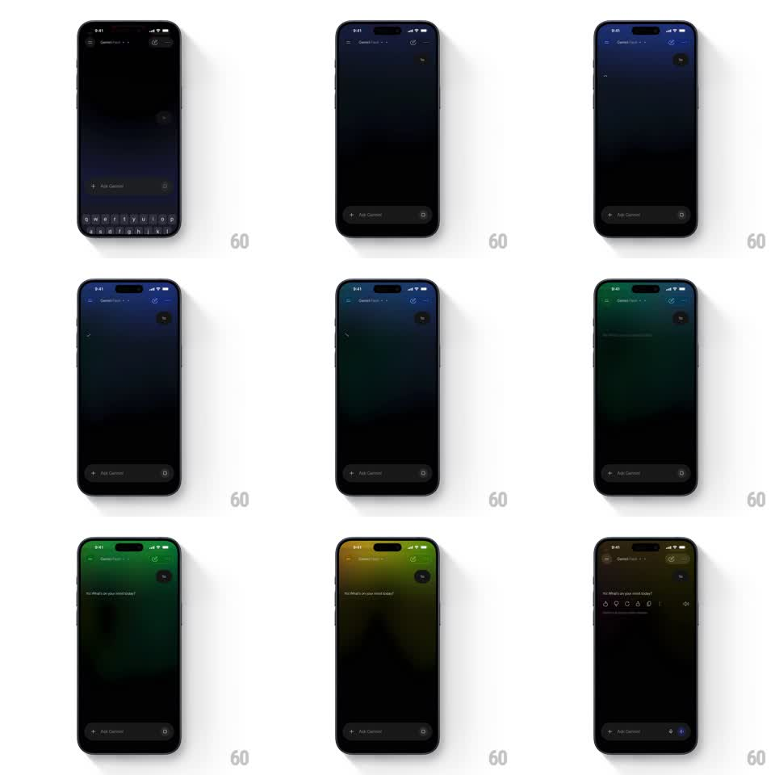

Media
Frame-by-frame

Rebuild this animation 1:1: Gemini's response background - while Gemini composes a response, a slow aurora gradient washes across the chat's dark background, drifting through blue, teal, green, and amber, then recedes back to black as the answer settles.

Rebuild this animation 1:1: Gemini's response background - while Gemini composes a response, a slow aurora gradient washes across the chat's dark background, drifting through blue, teal, green, and amber, then recedes back to black as the answer settles. ## Integration Integration: stack-agnostic spec - springs given as stiffness/damping, timed motions as duration + curve; map every value to your framework and animation library of choice. ## Scene Dark chat thread: user bubble top-right, assistant reply below with feedback icons. The entire background behind the thread carries the aurora. ## Motion spec Pattern: full-screen ambient aurora, ~10s per full hue journey. - The gradient is a large soft mesh (2-3 color blobs, radius ~60% of screen, heavily blurred) that drifts slowly (translate +-8% of screen over 8s) while its hue rotates: blue -> teal -> green -> amber -> back. - Intensity ramps in over 800ms when a response starts generating, holds at ~35% while streaming, and fades to black over 1.2s when the response completes. - Chat content scrolls over the aurora without affecting it (fixed background layer). ## Calibration - Saturation stays muted - a vivid rainbow looks like a wallpaper app, not Gemini. - The fade-out is slower than the fade-in; the calm-down should feel like settling. ## Reduced motion Static faint gradient tint (10% opacity) during generation; no drift or hue rotation. ## Don't miss - The aurora is behind everything including the header, not a per-bubble effect. - Hue changes are continuous interpolation - never discrete color steps.